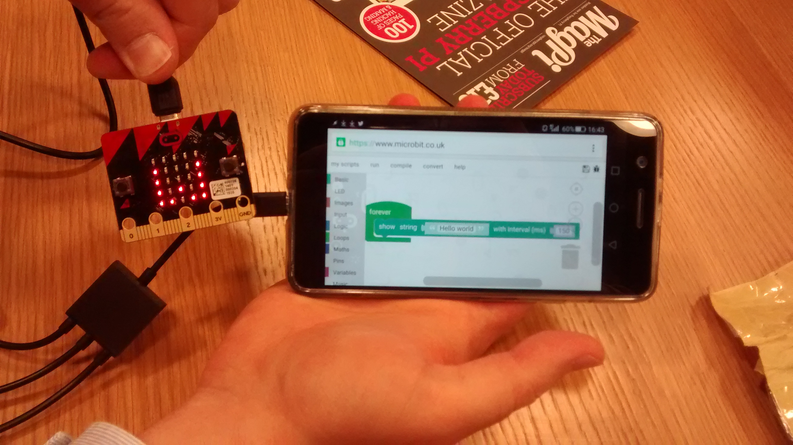
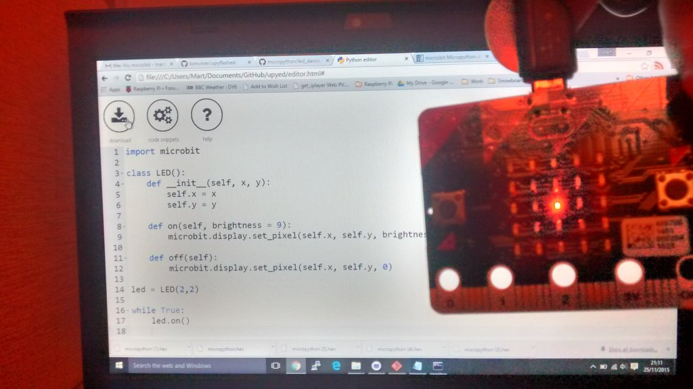

Martin O'Hanlon
Wall Heath, UK.
Wednesday, 9th December 2015
I decided to see if I could do something fun with the Microbit and David Whale (@whaleygeek) suggested 'can we use the microbit to control something in Minecraft', that sounded like a fun idea so I came up with a program which would allow me to fly an Xwing around Minecraft using the Microbit to control whether it went left or right and using the buttons to make it start and drop bombs.
I am quite pleased with myself!
The code is here.
Martin O'Hanlon
Birmingham, UK.
Monday, 7th December 2015
I was demoing a super cool project using the Microbit at Picademy (more on that later) we decided to see if we could get the Microbit working via a USB on-the-go connection and an Android phone. It worked a treat! Made a program using touchdevelop, downloaded the .hex and flashed it all using an Android phone. This can open up the Microbit to many young people who dont have regular access to a computer.

Martin O'Hanlon
Wall Heath, UK.
Monday, 30th November 2015
I wanted to have a go at using the MicroBit's accelerometer so I decided to make a Magic 8 Ball.
A blog post about creating the Magic 8 Ball is on stuffaboutcode.
The code is here.
Martin O'Hanlon
Wall Heath, UK.
Wednesday, 25th November 2015
Flushed with my success of turning on an LED, the equivalent of 'Hello World', I thought I would see how far I could push MicroPython and the MicroBit and see if I could port a version of 'Snake' I created a while ago. It turns out I could!
The code is here.
Martin O'Hanlon
Wall Heath, UK.
Wednesday, 25th November 2015
Tom Viner gave me some great tips and got me started using ntolls upyed to create some code and also supplied me with his auto upload utility upyflashed get it onto the micropython.
I started by making a simple class to control an LED.

The code is here.

Tom Viner
Kent, UK.
Tuesday, 24th November 2015
Tom Viner
Kent, UK.
Tuesday, 24th November 2015
upyflashed - A script to watch for new hex files from the upyed in-browser editor, and flash the micro:bit immediately
Tom Viner
Kent, UK.
Tuesday, 24th November 2015
Tom Viner
Kent, UK.
Monday, 23rd November 2015
Tom Viner
Kent, UK.
Thursday, 12th November 2015
I've received Mei-Xiu micro:bit at the London Python Dojo!

Nicholas Tollervey
Towcester, UK.
Saturday, 7th November 2015
I've finally finished the website and I'm ready to
post Mei-Xiu micro:bit to Tom Viner.